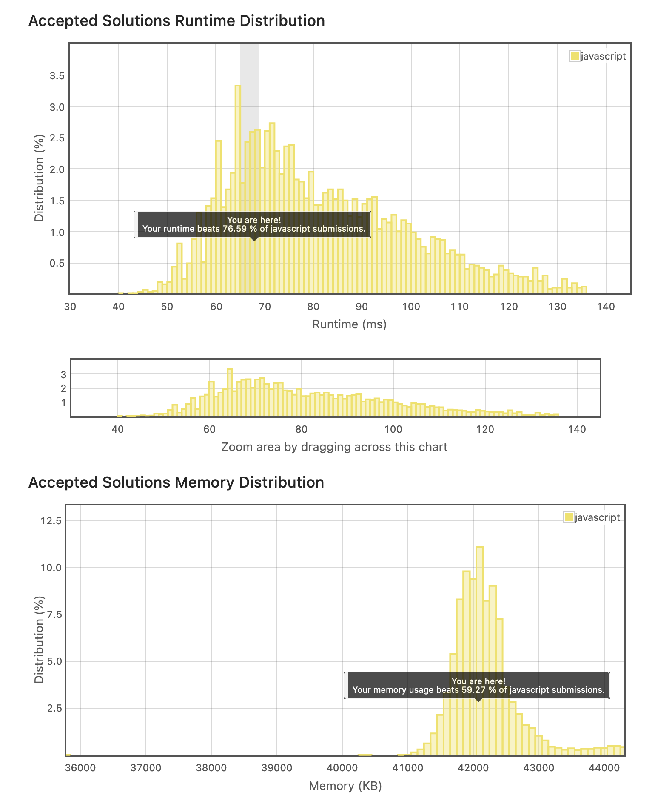

Given two strings needle and haystack, return the index of the first occurrence of needle in haystack, or -1 if needle is not part of haystack.
Clarification:
- What should we return when needle is an empty string? This is a great question to ask during an interview.
- For the purpose of this problem, we will return 0 when needle is an empty string. This is consistent to C's strstr() and Java's indexOf().
